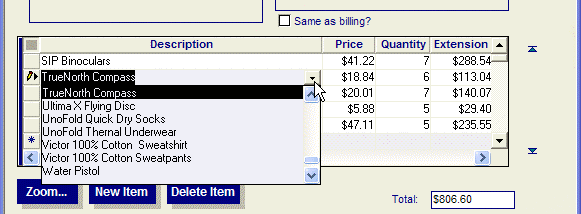
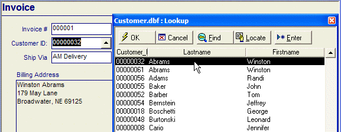

Comparing Drop-down Lists and Popup Dialogs
You can display a table lookup as a drop-down combo box, rather than in a separate pop-up window. While there are some advantages in using the pop-up window (i.e. the ability to edit and add records to the lookup table on the fly, and the ability to search for a record by any key), using a combo box creates a more natural feel for the user.
The AlphaSports Invoice Form has a product combo box lookup.

The Customer_ID lookup is a pop-up window.

Using a pop-up lookup window, you can take advantage of the following features:
Custom Browse Layout : You can specify a saved browse layout to use when Alpha Anywhere displays a lookup window. You have full control over the fonts, column titles, and other aspects of the appearance of the lookup Browse.
Sort by any browse Column : When the lookup browse is displayed, you can sort by any column by simply clicking on the column. The first click sorts ascending. The second click sorts descending. When you do a Find, Alpha Anywhere uses the current sort column to find by.
Efficient Finding of Records : When the lookup browse is displayed, you can type any letter and Alpha Anywhere invokes the Find command. For example, if you type the letter "S", Alpha Anywhere opens the Find dialog box and inserts the letter "S" in the text box, waiting for you to complete the search criteria.
Unique Records Only : When you define a lookup rule, you can specify that Alpha Anywhere should only display unique records in the lookup window. For example, if your lookup window displays a list of states from a customer table, Alpha Anywhere will display one record only for each state.
Maximized Lookup Window : You can specify that if the underlying form or browse window is maximized, and then when a lookup window is displayed, the window will also be maximized.